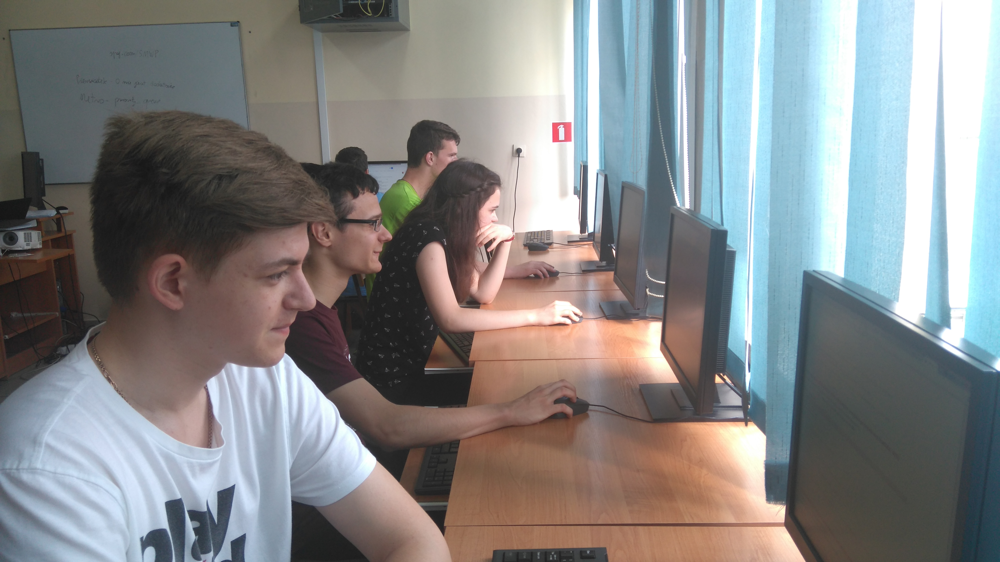
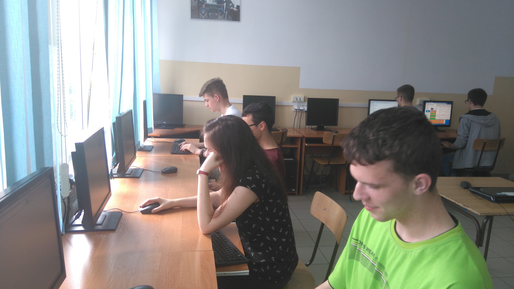
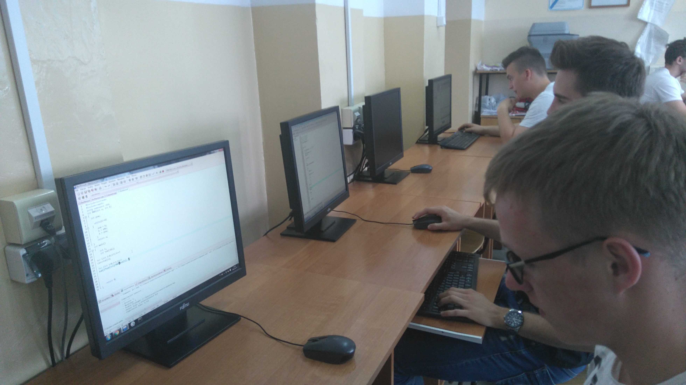

Witaj na stronie konkursu SMWP
Witam Cię internauto. Interesujesz się programowaniem? Szukasz rozwiązań zadań z naszego konkursu?
To miejsce doskonałe dla Ciebie, Zapraszamy! Wybierz zadanie, które Cię interesuje.
Oferujemy Ci pełny tok rozumowania prowadzący do rozwiązania!
[NEW] 06.06.2016 [Podsumowanie pierwszej edycji SMWP]
Pierwsza edycja konkursu „SMWP” dobiegła końca. Dziękujemy wszystkim uczestnikom za udział. Nie spodziewaliśmy się iż konkurs organizowany przez licealistów zostanie tak dobrze przyjęty! Przejdźmy teraz do najlepszych. Komplet zadań rozwiązało aż 6 osób.
Ranking ogólny
I miejsce: Marcin Kasprowicz
II miejsce: Jan Różański
III miejsce: Mariusz Jakubowski
IV miejsce: Maciej Boniecki
V miejsce: Rafał Kilar
VI miejsce: Grzegorz Spryszyński
Wyróżnienia
Za rozwiązanie zadań w najkrótszym czasie:
Rafał Kilar, który rozwiązał komplet zadań w czasie 08:58:57.
Za walkę i wytrwałość:
Konrad – (davor) 80 błędnych zgłoszeń, w tym 26 przy jednym zadaniu.
Michał J. Dziuban 27 błędnych zgłoszeń przy jednym zadaniu.
Ranking szkolny
I miejsce: Damian Korneluk, 15 rozwiązanych zadań.
II miejsce: Dawid Sowiński, 10 rozwiązanych zadań.
III miejsce: Szymon Witkowski, 6 rozwiązanych zadań.
IV miejsce: Agnieszka Ojdowska, 5 rozwiązanych zadań.
V miejsce: Dariusz Pluta
VI miejsce: Sebastian Ostrowski
VII miejsce: Adrian Piórkowski
VIII miejsce: Patryk Rolkowski
IX miejsce: Marcin Wiśniewski
X miejsce: Adrian Sobotka
XI miejsce: Szymon Stefański
Podziękowania
Przede wszystkim z tego miejsca chcielibyśmy podziękować Marcinowi Kasprowiczowi za ukazanie nam świata informatyki nie tylko jako nudnego tworu składającego się z zer i jedynek, ale jako coś wyjątkowego, rozwijającego kreatywność, logiczne myślenie a nawet budującego osobowość. Dziękujemy za zaszczepienie w nas zamiłowania do programowania oraz za całokształt pracy jaką sor włożył w nasze nauczanie. Życzymy dalszych sukcesów zawodowych!
Bank zadań SMWP
Omówienia do wszystkich zadań pojawią się jeszcze dziś na naszej stronie konkursu. Prosimy o komentarze na temat zadań, własne propozycje rozwiązań oraz cenne uwagi. Wszystkie zadania z edycji będą dodane jeszcze dziś na stronie spoja polskiego.
Kiedy kolejna edycja ? Aktualnie nie jest ona zaplanowana na żaden bliżej określony termin. Jednakże przy tak ciepłym przyjęciu skłonni będziemy przeprowadzić ją jak najszybciej. Jeszcze raz wielkie dzięki wszystkim!
[NEW] 01.06.2016 [Rozpoczęcie konkursu]
Dziękuję wszystkim za ciepłe przyjęcie konkursu. Niezmiernie cieszy nas tak wysoka aktywność uczestników i motywuje do dalszej pracy. Zadania z rundy pierwszej będzie można testować do niedzieli 23:59, a już 3 czerwca druga runda i kolejne 9 zadań do rozwiązania.
Pzebieg konkursu w I LO w Działdowie
- 
- 
- 
[NEW] 20.04.2016 [Zaproszenie na pierwszą edycję SMWP]
Szkolne Mistrzostwa W Programowaniu
Zapraszamy wszystkich bardzo serdecznie na pierwszą edycję Szkolnych Mistrzostw W Programowaniu.
Konkurs odbędzie się w postaci dwóch rund zdalnie przeprowadzonych w systemie spoj:
Runda I - 01.06.2016 (środa), godz 9:00
Runda II - 03.06.2016 (piątek), godz 17:00
Zawody potrwają do 05.06.2016 (niedziela) godz 23:59.
Zapraszają:
Bartosz Rychcik
Kacper Nowakowski
Maciej Grabowski
Powodzenia!